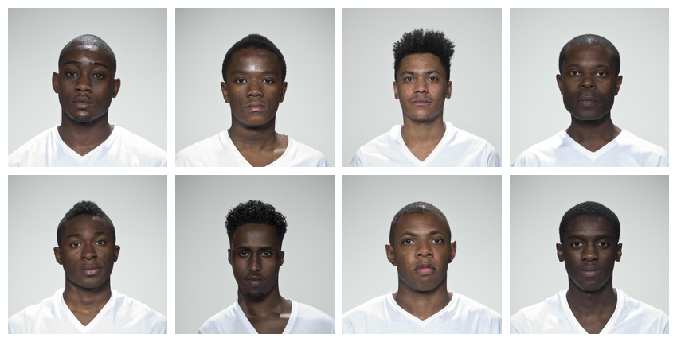
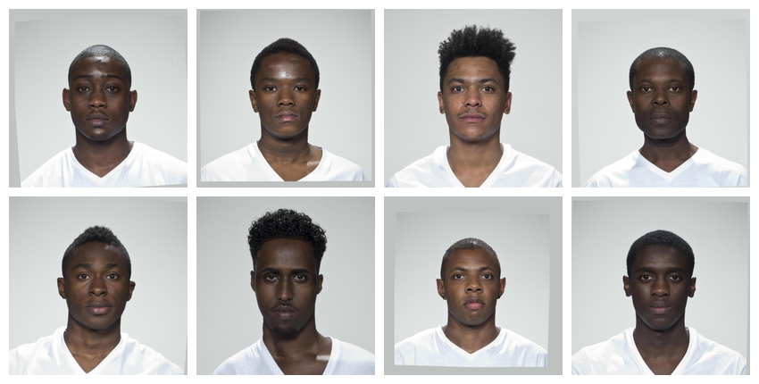
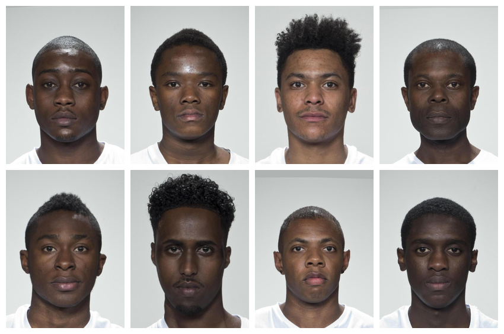
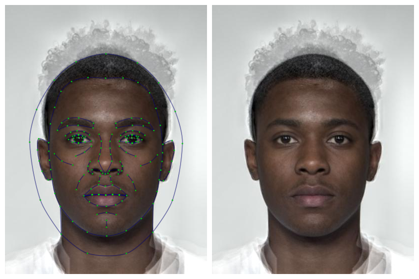
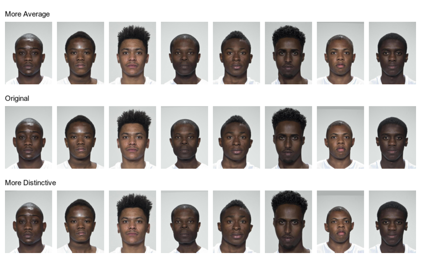
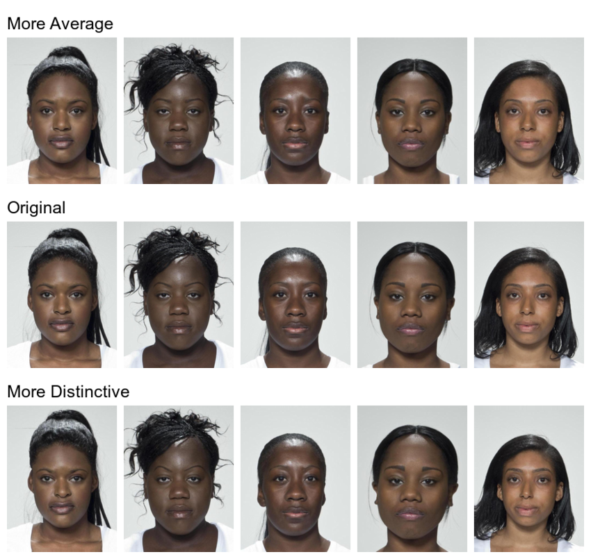
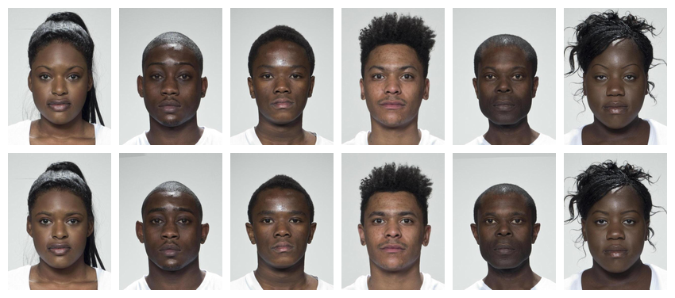
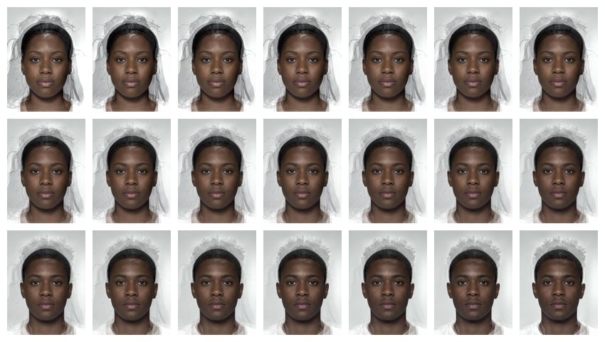
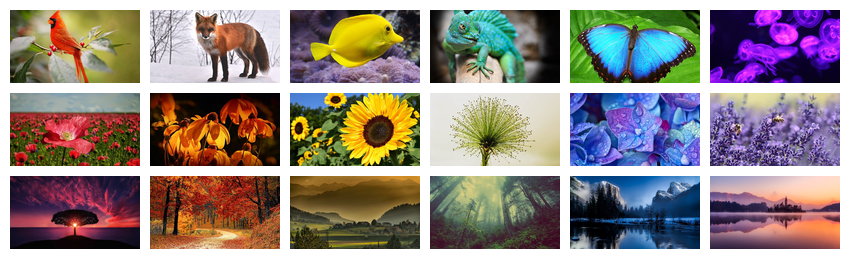
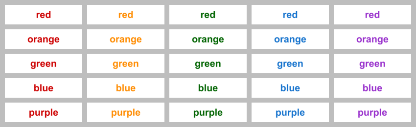

This vignette will show some recipes for common types of stimulus creation.
# load packages and set maximum plot width
library(webmorphR)
library(webmorphR.stim) # for extra stimulus sets
wm_opts(plot.maxwidth = 850)Averageness
Load demo images
Let’s start with a set of images from the demo image sets. You need to have the webmorphR.stim package installed if you haven’t done that already.
remotes::install_github("debruine/webmorphR.stim")Add info
You can add data to an image set to use in subsetting the images. For
demonstration, the “london” image set has a data table called
london_info.
head(london_info)
#> # A tibble: 6 × 4
#> face_id face_age face_gender face_eth
#> <chr> <int> <chr> <chr>
#> 1 001 24 female white
#> 2 002 24 female white
#> 3 003 38 female white
#> 4 004 30 male white
#> 5 005 28 male east_asian
#> 6 006 31 female west_asianUse add_info() to add the data. If the data table isn’t
in the same order as the stimuli, you can match the stimulus item names
to a data column using .by.
stimuli <- load_stim_london() |>
add_info(london_info)Subset
Select images from your stimuli to make a new image subset. The original images are large, and we don’t need the resulting stimuli to be that large, so we’ll reduce image size by 50% right at the start to reduce processing time.
subset <- stimuli |>
subset(face_eth == "black") |>
subset(face_gender == "male") |>
resize(.5)
plot(subset, nrow = 2)
Align
Next, align the images using Procrustes normalisation to the position
of the first image. They need to have templates fitted to do this. The
function patch() is used to match the background colour as
closely as possible.
The horiz_eyes function just makes sure that the first
image has good alignment, since his head is slightly tilted.
# get patch color for each image from top 10 pixels
patch_fill <- patch(subset, x1 = 0, x2 = 1, y1 = 0, y2 = 10)
aligned <- subset |>
horiz_eyes(fill = patch_fill) |>
align(procrustes = TRUE, fill = patch_fill)
plot(aligned, nrow = 2)
Note: If you get an error message about rgl or dynlib, and are using a Mac, you may need to install XQuartz.
Crop
You may also want to crop the images to a 3x4 aspect ratio by setting
width to 60% of the image and height to 80%. By default,
crop() will center the cropping, but you can also manually
set the x and y offsets. Values less than 2.0 are interpreted as
percentages, while values greater than 2.0 are interpreted as
pixels.

Average
Now we can make an average version of these faces. This uses the morphing functions available on the web app, so you need to have an internet connection. It usually takes 1-4 seconds per image to upload your images to the server for processing.

Transform
You can use this average face to transform the individual faces in distinctiveness and averageness. Give the shape vector names to set the output names automatically.
transf <- trans(trans_img = cropped,
from_img = avg,
to_img = cropped,
shape = c(avg = -0.5, dist = 0.5))Use subset() to plot by row.
plot_rows(
"More Average" = subset(transf, "avg"),
"Original" = cropped,
"More Distinctive" = subset(transf, "dist"),
top_label = TRUE
)
Save stimuli
Now you can set names and save your individual stimuli in a directory
to use in studies. The code below will create a directory called
“stimuli” in your working directory if there isn’t one already. You can
write to any format that magick::image_write() handles,
such as “png”, “jpeg”, or “gif” (the default is “png”).
avg |> write_stim(dir = "stimuli",
names = "m_avg",
format = "jpg")Use rename_stim() to search and replace patterns, add
prefixes or suffixes, or replace the names with a new vector of names.
The London images in the stimsets package have “_03”
appended to designate that they are the neutral front version from the
larger
set, which also includes smiling images and several different
viewpoints.
cropped |>
rename_stim(pattern = "_03",
replacement = "",
prefix = "orig_") |>
write_stim(dir = "stimuli", format = "jpg")
transf |>
rename_stim(pattern = "_03", replacement = "") |>
write_stim(dir = "stimuli", format = "jpg")Repeat
Now you can pipe all of the commands together and apply them to a new set of images, such as all the black women in the set.
# subset and resize
resized <- stimuli |>
subset(face_gender == "female") |>
subset(face_eth == "black") |>
resize(.5)
# get patch color for each image
patch_fill <- patch(resized, x1 = 0, x2 = 1, y1 = 0, y2 = 10)
# align and crop
cropped <- resized |>
horiz_eyes(fill = patch_fill) |>
align(procrustes = TRUE, fill = patch_fill) |>
crop(width = 0.6, height = 0.8, y_off = 0.05)
# average
avg <- avg(cropped)
# transform
transf <- trans(trans_img = cropped,
from_img = avg,
to_img = cropped,
shape = c(avg = -0.5, dist = 0.5))
# save
avg |> write_stim("stimuli", "f_avg", "jpg")
cropped |>
rename_stim(pattern = "_03",
replacement = "",
prefix = "orig_") |>
write_stim("stimuli", format = "jpg")
transf |>
rename_stim(pattern = "_03", replacement = "") |>
write_stim("stimuli", format = "jpg")
plot_rows(
"More Average" = subset(transf, "avg"),
"Original" = cropped,
"More Distinctive" = subset(transf, "dist"),
top_label = TRUE
)
Sexual Dimorphism
Read in images
To manipulate sexual dimorphism, you need male and female average faces like the ones created above. Load them from the saved files in the “stimuli” directory.
Transform
You can then transform them by -50% to feminise and +50% to masculinise. Remember to give your shape vector names to set the output names automatically.
sexdim <- trans(trans_img = orig[1:6],
from_img = avgs$f_avg,
to_img = avgs$m_avg,
shape = c(fem = -0.5, masc = 0.5))
plot(sexdim, nrow = 2)
Animate
Make a continuum
Make a continuum that morphs from the female to the male average in 5% steps. This makes 21 images, so will take a few seconds; be patient.

Animate
You can turn your images into an animated gif. Resize the images to
the size you want first. Save the resulting image as a gif. If you have
the gifski package installed, this will be used to create
the animated gif and is faster than the magick algorithm
(you don’t have to load gifski for it to be used, just
install it).
#install.packages("gifski") # for faster animation
continuum |>
resize(width = 180) |>
animate(fps = 20, rev = TRUE)When you run this code, even in an R Markdown document, the gif will show in the Viewer pane, but it will display in the document when you knit.
Non-Face Stimuli
You can also process images without templates. For example, the following code takes a group of images and crops them to a standard size.
# load rainbow images
stimuli <- load_stim_rainbow()
# get info on the images to put in order by type and colour
info <- rainbow_info |>
dplyr::arrange(type, colour)
# crop to smallest size
width <- width(stimuli, "min")
height <- height(stimuli, "min")
stim <- crop(stimuli, width, height)
stim <- stim[info$photo_name] # reorder by type and colour
plot(stim, ncol = 6)
Word Stimuli
Create word stimuli by starting with blank images and adding words to
each stimulus with the label() function.
# make a vector of the words and colours they should print in
colours <- c(red = "red3",
orange = "darkorange",
green = "darkgreen",
blue = "dodgerblue3",
purple = "darkorchid")
# make vector of labels (each word in each colour)
n <- length(colours)
labels <- rep(names(colours), each = n)
# make 36 blank 800x200px images and add labels
stroop <- blank(n*n, 800, 200) |>
label(labels,
size = 100,
color = colours,
weight = 700,
gravity = "center")
plot(stroop, ncol = n, fill = "grey")
This script took 2.2 minutes to render all the included images from scratch.